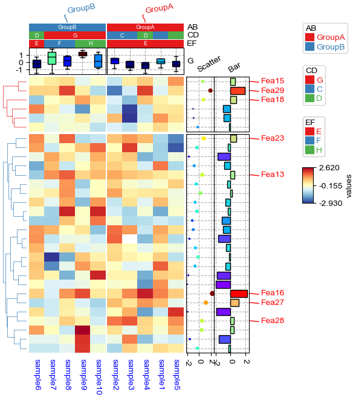
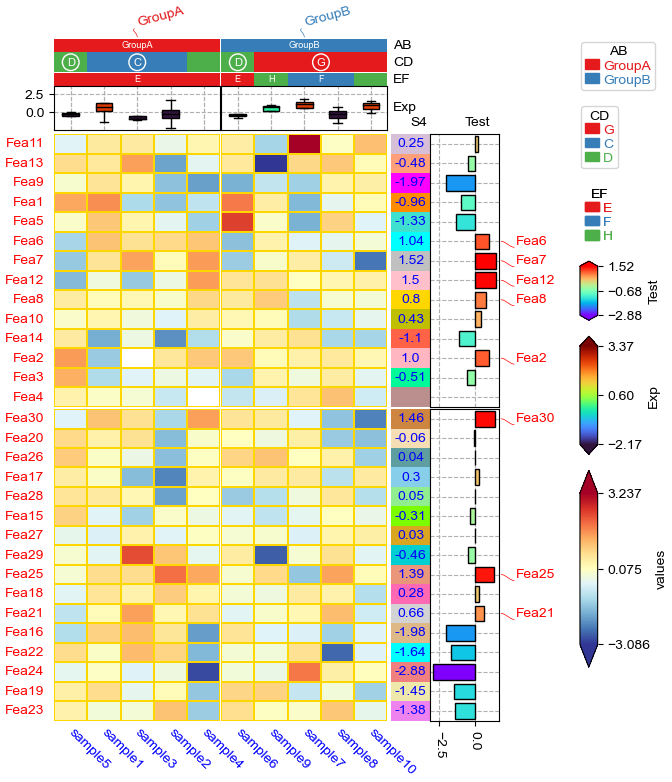
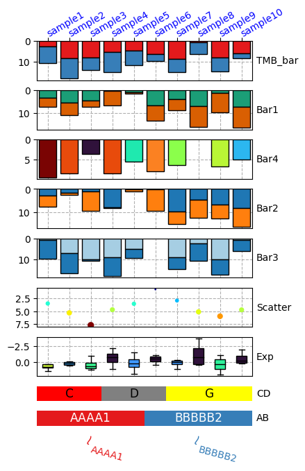
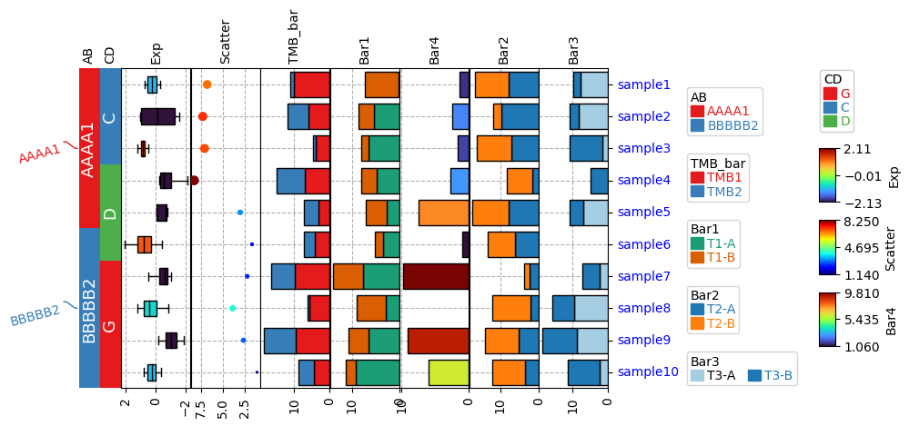
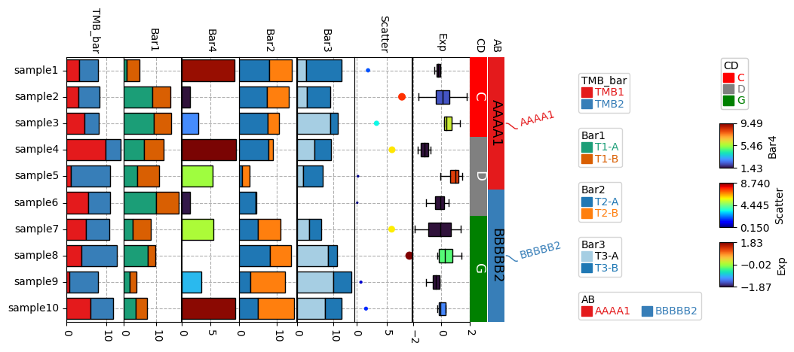
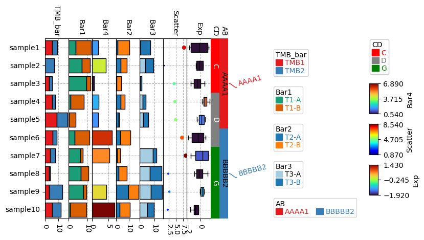
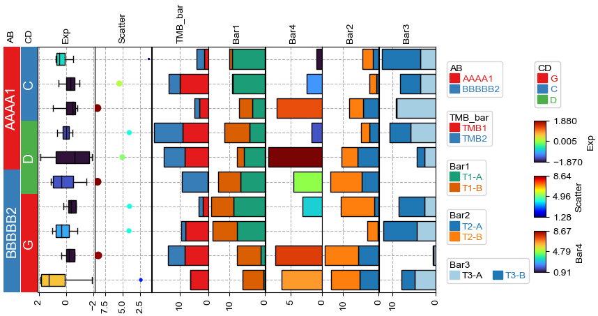

[1]:
import os,sys
%matplotlib inline
import matplotlib.pylab as plt
import pickle
plt.rcParams['figure.dpi'] = 100
plt.rcParams['savefig.dpi']=300
sys.path.append(os.path.expanduser("~/Projects/Github/PyComplexHeatmap"))
from PyComplexHeatmap import *
Generate dataset¶
[2]:
#Generate example dataset (random)
df = pd.DataFrame(['GroupA'] * 5 + ['GroupB'] * 5, columns=['AB'])
df['CD'] = ['C'] * 3 + ['D'] * 3 + ['G'] * 4
df['EF'] = ['E'] * 6 + ['F'] * 2 + ['H'] * 2
df['F'] = np.random.normal(0, 1, 10)
df.index = ['sample' + str(i) for i in range(1, df.shape[0] + 1)]
df_box = pd.DataFrame(np.random.randn(10, 4), columns=['Gene' + str(i) for i in range(1, 5)])
df_box.index = ['sample' + str(i) for i in range(1, df_box.shape[0] + 1)]
df_bar = pd.DataFrame(np.random.uniform(0, 10, (10, 2)), columns=['TMB1', 'TMB2'])
df_bar.index = ['sample' + str(i) for i in range(1, df_box.shape[0] + 1)]
df_scatter = pd.DataFrame(np.random.uniform(0, 10, 10), columns=['Scatter'])
df_scatter.index = ['sample' + str(i) for i in range(1, df_box.shape[0] + 1)]
df_heatmap = pd.DataFrame(np.random.randn(30, 10), columns=['sample' + str(i) for i in range(1, 11)])
df_heatmap.index = ["Fea" + str(i) for i in range(1, df_heatmap.shape[0] + 1)]
df_heatmap.iloc[1, 2] = np.nan
Add selected rows labels¶
[3]:
#Annotate the rows with average > 0.3
df_rows = df_heatmap.apply(lambda x:x.name if x.sample4 > 0.5 else None,axis=1)
df_rows=df_rows.to_frame(name='Selected')
df_rows['XY']=df_rows.index.to_series().apply(lambda x:'A' if int(x.replace('Fea',''))>=15 else 'B')
row_ha = HeatmapAnnotation(
Scatter=anno_scatterplot(df_heatmap.sample4.apply(lambda x:round(x,2)),
height=12,cmap='jet',legend=False),
Bar=anno_barplot(df_heatmap.sample4.apply(lambda x:round(x,2)),
height=15,cmap='rainbow',legend=False),
selected=anno_label(df_rows,colors='red',relpos=(-0.05,0.4)),
label_kws={'rotation':30,'horizontalalignment':'left','verticalalignment':'bottom'},
axis=0,verbose=0)
col_ha = HeatmapAnnotation(label=anno_label(df.AB, merge=True,rotation=10),
AB=anno_simple(df.AB,add_text=True),axis=1,
CD=anno_simple(df.CD,add_text=True),
EF=anno_simple(df.EF,add_text=True,
legend_kws={'frameon':True}),
G=anno_boxplot(df_box, cmap='jet',legend=False),
verbose=0)
plt.figure(figsize=(5.5, 6.5))
cm = ClusterMapPlotter(data=df_heatmap, top_annotation=col_ha,right_annotation=row_ha,
col_cluster=True,row_cluster=True,
col_split=df.AB,row_split=2,
col_split_gap=0.5,row_split_gap=0.8,
label='values',row_dendrogram=True,
show_rownames=False,show_colnames=True,
tree_kws={'row_cmap': 'Set1'},verbose=0,legend_gap=5,
cmap='RdYlBu_r',xticklabels_kws={'labelrotation':-90,'labelcolor':'blue'})
plt.savefig("example0.pdf", bbox_inches='tight')
plt.show()

Add float annotations on the top of heatmap cells¶
[4]:
#Annotate the rows with average > 0.3
df_rows = df_heatmap.apply(lambda x:x.name if x.sample4 > 0.5 else None,axis=1)
df_rows=df_rows.to_frame(name='Selected')
df_rows['XY']=df_rows.index.to_series().apply(lambda x:'A' if int(x.replace('Fea',''))>=15 else 'B')
row_ha = HeatmapAnnotation(S4=anno_simple(df_heatmap.sample4.apply(lambda x:round(x,2)),
add_text=True,height=10,
text_kws={'rotation':0,'fontsize':10,'color':'black'}),
# Scatter=anno_scatterplot(df_heatmap.sample4.apply(lambda x:round(x,2)),
# height=10),
Test=anno_barplot(df_heatmap.sample4.apply(lambda x:round(x,2)),
height=18,cmap='rainbow'),
selected=anno_label(df_rows,colors='red'),
axis=0,verbose=0,label_kws={'rotation':0,'horizontalalignment':'left','verticalalignment':'bottom'})
col_ha = HeatmapAnnotation(label=anno_label(df.AB, merge=True,rotation=15),
AB=anno_simple(df.AB,add_text=True),axis=1,
CD=anno_simple(df.CD,add_text=True),
EF=anno_simple(df.EF,add_text=True,
legend_kws={'frameon':False}),
Exp=anno_boxplot(df_box, cmap='turbo'),
verbose=0) #verbose=0 will turn off the log.
print(df)
print(df_box.mean(axis=1))
print(df_heatmap)
plt.figure(figsize=(6, 8))
cm = ClusterMapPlotter(data=df_heatmap, top_annotation=col_ha,right_annotation=row_ha,
col_split=df.AB,
row_split=df_rows.XY, col_split_gap=0.5,row_split_gap=1,
col_cluster=True,row_cluster=True,
label='values',row_dendrogram=False,show_rownames=True,show_colnames=True,
tree_kws={'row_cmap': 'Set1'},verbose=0,legend_gap=7,
annot=True,linewidths=0.05,linecolor='gold',cmap='RdYlBu_r',
xticklabels_kws={'labelrotation':-45,'labelcolor':'blue'})
plt.show()
print(cm.row_order)
print(cm.col_order)
AB CD EF F
sample1 GroupA C E -1.800357
sample2 GroupA C E -0.930987
sample3 GroupA C E 1.058646
sample4 GroupA D E 0.266437
sample5 GroupA D E -0.420567
sample6 GroupB D E -1.106418
sample7 GroupB G F 0.386707
sample8 GroupB G F -0.649289
sample9 GroupB G H -0.364363
sample10 GroupB G H 0.375656
sample1 -0.375560
sample2 0.531760
sample3 -0.760624
sample4 -0.055088
sample5 0.257131
sample6 -0.378000
sample7 -0.144460
sample8 -0.301731
sample9 0.238799
sample10 0.469669
dtype: float64
sample1 sample2 sample3 sample4 sample5 sample6 sample7 \
Fea1 -0.113018 -0.802443 -1.721334 0.165057 -1.111418 0.278762 0.688171
Fea2 1.056704 0.185701 NaN -0.333782 0.320471 -0.587266 1.605186
Fea3 0.340796 -0.676016 0.394595 1.210112 0.363083 -0.155844 0.307479
Fea4 -0.523570 0.106245 0.181236 -0.057037 -0.984656 0.679569 -0.989958
Fea5 1.509535 0.234299 -0.211161 0.048732 0.124812 -1.008890 0.654467
Fea6 1.150802 -0.066351 0.735251 0.702782 -0.375127 -0.419358 -0.155704
Fea7 -1.102079 -1.357868 0.516006 -0.589698 0.661758 -0.390484 0.293841
Fea8 -0.176483 1.180146 -0.298591 1.429133 0.065865 -0.112544 0.088466
Fea9 0.046303 0.450548 1.046307 -0.705231 0.433155 0.640297 -0.689398
Fea10 -0.119920 0.616495 -0.717920 -1.750016 -0.537977 0.787900 -0.164209
Fea11 0.202869 0.954166 0.230901 -0.239026 0.699849 -1.374232 -1.287165
Fea12 -1.432473 -1.049079 0.360931 -0.294205 0.591722 1.008327 -1.050075
Fea13 0.474784 -2.001455 0.142153 -3.263511 0.681559 -1.235840 0.606833
Fea14 0.526221 0.187974 1.083452 0.782416 1.236977 0.153174 -1.442578
Fea15 -1.310947 -1.029567 0.414505 -0.291165 -0.237991 0.417799 -0.660109
Fea16 -1.215031 0.387055 0.082838 -0.205668 1.100794 1.012377 -0.693909
Fea17 -0.743923 0.484815 -0.814253 -0.021791 -0.302276 -2.173052 0.006769
Fea18 -0.229806 -0.465750 -1.095879 -0.685224 -0.022995 0.950494 1.133673
Fea19 -1.043670 -0.718997 0.369865 -0.402591 0.011227 -0.507523 -1.131501
Fea20 0.747714 1.752014 -0.812442 0.442343 0.102273 0.345739 0.179901
Fea21 0.041314 -0.671223 0.878605 1.478000 0.210785 -0.828541 -0.117957
Fea22 0.385923 1.830329 -0.790607 0.046539 0.486212 1.109259 -1.744814
Fea23 1.204730 -0.248724 -1.954116 -0.248607 -0.680621 -0.124036 0.551948
Fea24 0.354511 -1.363276 -1.112071 -0.185243 -0.199802 -0.665438 0.384790
Fea25 -0.949328 -1.154091 1.543023 -0.819031 2.387064 1.226650 -0.159958
Fea26 -0.931535 -1.193236 0.206574 -0.079225 0.830488 0.141325 1.503394
Fea27 0.513197 1.028542 -0.105709 -1.379882 -1.015600 -1.727250 0.498453
Fea28 -0.068002 0.070328 -0.895496 -0.559353 -0.190959 -1.617941 0.674892
Fea29 0.731844 1.248419 -0.158340 2.174290 1.033429 0.790517 1.237982
Fea30 1.318765 0.064771 -1.262095 0.434380 0.492084 2.322948 -0.212629
sample8 sample9 sample10
Fea1 0.604729 -0.892492 -0.730244
Fea2 1.309484 -0.666602 -0.592244
Fea3 -1.711447 0.184070 0.626646
Fea4 -1.337134 -1.287732 -0.010492
Fea5 -0.200628 0.884735 -0.096871
Fea6 -1.045043 0.056244 0.062953
Fea7 -0.980507 0.991546 0.556596
Fea8 -0.879417 -0.741027 0.721615
Fea9 0.074086 -0.004615 2.510856
Fea10 -0.379833 0.070881 -0.940379
Fea11 -0.470293 -0.791963 -0.302387
Fea12 -0.110722 0.732925 -1.275638
Fea13 -0.200434 0.482811 -1.246183
Fea14 0.028819 -0.833201 1.428357
Fea15 -0.002098 0.838974 -0.912677
Fea16 0.120798 -0.955536 0.498962
Fea17 -0.210279 1.783104 -0.819936
Fea18 -0.305665 0.261158 0.708979
Fea19 -1.143739 -0.246278 -0.699435
Fea20 -1.657910 0.001372 0.163240
Fea21 0.360567 0.497258 1.340021
Fea22 -0.733275 1.136140 -0.479579
Fea23 -0.628413 -0.185868 -0.122532
Fea24 1.284850 -1.323776 0.433743
Fea25 2.188825 -0.044563 0.226502
Fea26 -0.319793 0.783103 1.158647
Fea27 -3.261359 0.155401 0.198529
Fea28 0.772695 -0.367026 -1.012565
Fea29 -1.472886 0.266313 0.691148
Fea30 -0.607248 0.918269 0.272556

[['Fea16', 'Fea25', 'Fea15', 'Fea19', 'Fea22', 'Fea30', 'Fea23', 'Fea27', 'Fea20', 'Fea29', 'Fea17', 'Fea28', 'Fea18', 'Fea26', 'Fea21', 'Fea24'], ['Fea1', 'Fea10', 'Fea5', 'Fea2', 'Fea13', 'Fea7', 'Fea12', 'Fea11', 'Fea9', 'Fea14', 'Fea3', 'Fea6', 'Fea4', 'Fea8']]
[['sample3', 'sample5', 'sample4', 'sample1', 'sample2'], ['sample7', 'sample9', 'sample8', 'sample6', 'sample10']]
Only plot the annotations¶
[5]:
df = pd.DataFrame(['AAAA1'] * 5 + ['BBBBB2'] * 5, columns=['AB'])
df['CD'] = ['C'] * 3 + ['D'] * 3 + ['G'] * 4
df['F'] = np.random.normal(0, 1, 10)
df.index = ['sample' + str(i) for i in range(1, df.shape[0] + 1)]
df_box = pd.DataFrame(np.random.randn(10, 4), columns=['Gene' + str(i) for i in range(1, 5)])
df_box.index = ['sample' + str(i) for i in range(1, df_box.shape[0] + 1)]
df_bar = pd.DataFrame(np.random.uniform(0, 10, (10, 2)), columns=['TMB1', 'TMB2'])
df_bar.index = ['sample' + str(i) for i in range(1, df_box.shape[0] + 1)]
df_scatter = pd.DataFrame(np.random.uniform(0, 10, 10), columns=['Scatter'])
df_scatter.index = ['sample' + str(i) for i in range(1, df_box.shape[0] + 1)]
df_bar1 = pd.DataFrame(np.random.uniform(0, 10, (10, 2)), columns=['T1-A', 'T1-B'])
df_bar1.index = ['sample' + str(i) for i in range(1, df_box.shape[0] + 1)]
df_bar2 = pd.DataFrame(np.random.uniform(0, 10, (10, 2)), columns=['T2-A', 'T2-B'])
df_bar2.index = ['sample' + str(i) for i in range(1, df_box.shape[0] + 1)]
df_bar3 = pd.DataFrame(np.random.uniform(0, 10, (10, 2)), columns=['T3-A', 'T3-B'])
df_bar3.index = ['sample' + str(i) for i in range(1, df_box.shape[0] + 1)]
df_bar3.iloc[5,0]=np.nan
df_bar4 = pd.DataFrame(np.random.uniform(0, 10, (10, 1)), columns=['T4'])
df_bar4.index = ['sample' + str(i) for i in range(1, df_box.shape[0] + 1)]
df_bar4.iloc[7,0]=np.nan
print(df)
print(df_box)
print(df_scatter)
print(df_bar)
print(df_bar1)
print(df_bar2)
print(df_bar3)
print(df_bar4)
AB CD F
sample1 AAAA1 C -0.678909
sample2 AAAA1 C -0.448144
sample3 AAAA1 C 0.909159
sample4 AAAA1 D 0.027144
sample5 AAAA1 D -1.871106
sample6 BBBBB2 D -1.530629
sample7 BBBBB2 G 0.543788
sample8 BBBBB2 G -0.881580
sample9 BBBBB2 G 2.089826
sample10 BBBBB2 G -2.028530
Gene1 Gene2 Gene3 Gene4
sample1 -0.322251 -0.655719 1.136161 -0.862171
sample2 1.105519 1.320725 -0.891096 1.503062
sample3 1.596651 0.327729 2.603366 -1.017645
sample4 -0.192436 1.049980 -0.954263 0.575181
sample5 -0.294554 0.164030 0.733337 0.238426
sample6 -1.738797 1.223921 -0.604327 -0.683664
sample7 1.172441 -0.868230 0.616225 0.234926
sample8 0.861141 2.304734 -1.581784 0.786688
sample9 -0.536167 0.641317 -0.439918 0.428473
sample10 0.764819 1.865218 0.672206 -0.216883
Scatter
sample1 8.943245
sample2 6.443294
sample3 4.275757
sample4 1.214931
sample5 8.377304
sample6 2.767545
sample7 6.911185
sample8 9.386243
sample9 8.821732
sample10 6.885472
TMB1 TMB2
sample1 4.546972 4.682667
sample2 4.278227 6.843780
sample3 6.753948 9.659062
sample4 7.801666 3.255234
sample5 8.644647 5.079666
sample6 0.876068 7.069506
sample7 5.700102 3.521473
sample8 3.113376 6.922623
sample9 7.825700 6.730716
sample10 8.227309 9.531808
T1-A T1-B
sample1 6.723674 1.466752
sample2 1.409928 1.013407
sample3 5.581926 2.399356
sample4 8.964402 1.181635
sample5 8.139782 7.782255
sample6 7.325055 1.787242
sample7 9.720406 0.033299
sample8 4.121553 8.917783
sample9 4.522844 6.836363
sample10 1.236714 9.142774
T2-A T2-B
sample1 5.853218 8.992924
sample2 7.967458 1.075254
sample3 1.578277 0.385299
sample4 6.934793 9.411567
sample5 5.632291 5.019018
sample6 9.589989 7.362816
sample7 8.640575 1.120346
sample8 3.113061 3.370857
sample9 3.435627 0.080194
sample10 7.811886 8.492435
T3-A T3-B
sample1 9.293747 4.716164
sample2 4.785012 4.007741
sample3 0.323245 9.503995
sample4 6.127150 7.760195
sample5 1.859536 7.294723
sample6 NaN 1.532882
sample7 3.454082 8.264201
sample8 3.276426 6.744498
sample9 0.556610 3.078806
sample10 0.671570 2.360396
T4
sample1 2.612349
sample2 0.827115
sample3 3.476452
sample4 2.093023
sample5 7.776480
sample6 7.095094
sample7 9.647561
sample8 NaN
sample9 7.751302
sample10 8.987452
[6]:
plt.figure(figsize=(4, 8))
col_ha = HeatmapAnnotation(label=anno_label(df.AB, merge=True,rotation=15),
AB=anno_simple(df.AB,add_text=True,legend=True), axis=1,
CD=anno_simple(df.CD, add_text=True,legend=True,text_kws={'color':'black'}),
Exp=anno_boxplot(df_box, cmap='turbo',legend=True),
Scatter=anno_scatterplot(df_scatter),
TMB_bar=anno_barplot(df_bar,legend=True,cmap='Set1'),
Bar1=anno_barplot(df_bar1,legend=True,cmap='Dark2'),
Bar4=anno_barplot(df_bar4,legend=True,cmap='turbo'),
Bar2=anno_barplot(df_bar2,legend=True,cmap='tab10'),
Bar3=anno_barplot(df_bar3,legend=True,cmap='Paired'),
plot=True,legend=True,legend_gap=5,hgap=0.5)
col_ha.show_ticklabels(df.index.tolist(),fontdict={'color':'blue'},rotation=-30)
plt.show()
Starting plotting HeatmapAnnotations
Collecting annotation legends..

Change orentation down and add extra space¶
[7]:
plt.figure(figsize=(4, 8))
row_ha = HeatmapAnnotation(
TMB_bar=anno_barplot(df_bar,legend=True,cmap='Set1'),
Bar1=anno_barplot(df_bar1,legend=True,cmap='Dark2'),
Bar4=anno_barplot(df_bar4,legend=True,cmap='turbo'),
Bar2=anno_barplot(df_bar2,legend=True,cmap='tab10'),
Bar3=anno_barplot(df_bar3,legend=True,cmap='Paired'),
Scatter=anno_scatterplot(df_scatter),
Exp=anno_boxplot(df_box, cmap='turbo',legend=True),
CD=anno_simple(df.CD, colors={'C': 'red', 'D': 'gray', 'G': 'yellow'},
add_text=True,legend=True,text_kws={'color':'black'}),
AB=anno_simple(df.AB,add_text=True,legend=True),
label=anno_label(df.AB, merge=True,rotation=-15),
plot=True,plot_legend=False,legend_hpad=13,axis=1,hgap=1
)
row_ha.show_ticklabels(df.index.tolist(),fontdict={'color':'blue'},rotation=30)
plt.show()
# Here, we can use hgap (when axis=1) or wgap (when axis=0) to control the widh of height space between different annotations.
Starting plotting HeatmapAnnotations

Change orentation to the left¶
[8]:
plt.figure(figsize=(8, 4))
row_ha = HeatmapAnnotation(label=anno_label(df.AB, merge=True,rotation=15),
AB=anno_simple(df.AB,add_text=True,legend=True),
CD=anno_simple(df.CD,add_text=True,legend=True),
Exp=anno_boxplot(df_box, cmap='turbo',legend=True),
Scatter=anno_scatterplot(df_scatter),
TMB_bar=anno_barplot(df_bar,legend=True,cmap='Set1'),
Bar1=anno_barplot(df_bar1,legend=True,cmap='Dark2'),
Bar4=anno_barplot(df_bar4,legend=True,cmap='turbo'),
Bar2=anno_barplot(df_bar2,legend=True,cmap='tab10'),
Bar3=anno_barplot(df_bar3,legend=True,cmap='Paired'),
plot=True,legend=True,legend_gap=5,
axis=0,legend_hpad=20
)
row_ha.show_ticklabels(df.index.tolist(),fontdict={'color':'blue'},rotation=0)
plt.show()
Starting plotting HeatmapAnnotations
Collecting annotation legends..
Incresing ncol
Incresing ncol
Incresing ncol
More than 3 cols is not supported
Legend too long, generating a new column..

Change orentation to the right¶
[9]:
plt.figure(figsize=(8, 4))
row_ha = HeatmapAnnotation(
TMB_bar=anno_barplot(df_bar,legend=True,cmap='Set1'),
Bar1=anno_barplot(df_bar1,legend=True,cmap='Dark2'),
Bar4=anno_barplot(df_bar4,legend=True,cmap='turbo'),
Bar2=anno_barplot(df_bar2,legend=True,cmap='tab10'),
Bar3=anno_barplot(df_bar3,legend=True,cmap='Paired'),
Scatter=anno_scatterplot(df_scatter),
Exp=anno_boxplot(df_box, cmap='turbo',legend=True),
CD=anno_simple(df.CD, colors={'C': 'red', 'D': 'gray', 'G': 'green'},
add_text=True,legend=True,text_kws={'rotation':-90}),
AB=anno_simple(df.AB,add_text=True,legend=True,text_kws={'rotation':-90,'color':'black'}),
label=anno_label(df.AB, merge=True,rotation=15),
plot=True,legend=True,legend_hpad=13,legend_gap=5,axis=0
)
row_ha.show_ticklabels(df.index.tolist(),fontdict={'color':'black'},rotation=0)
plt.show()
Starting plotting HeatmapAnnotations
Collecting annotation legends..
Incresing ncol
Incresing ncol
Incresing ncol
More than 3 cols is not supported
Legend too long, generating a new column..

Changing orientation using parameter orientation¶
By Default, if there is no anno_label in the annotation, the oriention would be determined by parameter orientation.
[10]:
plt.figure(figsize=(8, 4))
col_ha = HeatmapAnnotation(
AB=anno_simple(df.AB,add_text=True,legend=True),
CD=anno_simple(df.CD,add_text=True,legend=True),
Exp=anno_boxplot(df_box, cmap='turbo',legend=True),
Scatter=anno_scatterplot(df_scatter),
TMB_bar=anno_barplot(df_bar,legend=True,cmap='Set1'),
Bar1=anno_barplot(df_bar1,legend=True,cmap='Dark2'),
Bar4=anno_barplot(df_bar4,legend=True,cmap='turbo'),
Bar2=anno_barplot(df_bar2,legend=True,cmap='tab10'),
Bar3=anno_barplot(df_bar3,legend=True,cmap='Paired'),
plot=True,legend=True,axis=0,
legend_gap=5,orientation='left',
)
plt.show()
Starting plotting HeatmapAnnotations
Collecting annotation legends..
Incresing ncol
Incresing ncol
Incresing ncol
More than 3 cols is not supported
Legend too long, generating a new column..

[11]:
plt.figure(figsize=(8, 4))
col_ha = HeatmapAnnotation(
AB=anno_simple(df.AB,add_text=True,legend=True,
text_kws={'rotation':-90,'fontsize':14,'color':'black'}),
CD=anno_simple(df.CD,add_text=True,legend=True,
text_kws={'rotation':-90,'fontsize':14,'color':'white'}),
Exp=anno_boxplot(df_box, cmap='turbo',legend=True),
Scatter=anno_scatterplot(df_scatter),
TMB_bar=anno_barplot(df_bar,legend=True,cmap='Set1'),
Bar1=anno_barplot(df_bar1,legend=True,cmap='Dark2'),
Bar4=anno_barplot(df_bar4,legend=True,cmap='turbo'),
Bar2=anno_barplot(df_bar2,legend=True,cmap='tab10'),
Bar3=anno_barplot(df_bar3,legend=True,cmap='Paired'),
plot=True,legend=True,axis=0,wgap=3,
legend_gap=5,orientation='right',
)
plt.show()
Starting plotting HeatmapAnnotations
Collecting annotation legends..
Incresing ncol
Incresing ncol
Incresing ncol
More than 3 cols is not supported
Legend too long, generating a new column..

Add multiple heatmap annotations using for loop¶
Typically, we can create a heatmap annotatin using the following code:
col_ha = HeatmapAnnotation(
Group=anno_simple(df_cols.hypomethylated_samples,colors=sample_group_color_dict,legend=True),
CellType=anno_simple(df_cols.CellType,colors=ct_color_dict,legend=ct_legend),
M1=anno_simple(df_cols['M1'],cmap='jet',legend=lgd,vmax=1,vmin=0,legend_kws={'label':'M1'}),
verbose=0,label_side='right',label_kws={'horizontalalignment':'left'})
But what if we have many annotations, for example:
col_ha = HeatmapAnnotation(
Group=anno_simple(df_cols.hypomethylated_samples,colors=sample_group_color_dict,legend=True),
CellType=anno_simple(df_cols.CellType,colors=ct_color_dict,legend=ct_legend),
M1=anno_simple(df_cols['M1'],cmap='jet',legend=lgd,vmax=1,vmin=0,legend_kws={'label':'M1'}),
M2=anno_simple(df_cols['M2'],cmap='jet',legend=lgd,vmax=1,vmin=0,legend_kws={'label':'M2'}),
M3=anno_simple(df_cols['M3'],cmap='jet',legend=lgd,vmax=1,vmin=0,legend_kws={'label':'M3'}),
.....
verbose=0,label_side='right',label_kws={'horizontalalignment':'left'})
In this case, we can create an dict including the name and annotation as keys and values:
col_ha_dict={
'Group':anno_simple(df_cols.hypomethylated_samples,colors=sample_group_color_dict,legend=True),
'CellType':anno_simple(df_cols.CellType,colors=ct_color_dict,legend=ct_legend)
}
for col in sample_cols:
col_ha_dict[col]=anno_simple(df_cols[col],cmap='jet',legend=lgd,vmax=1,vmin=0,legend_kws={'label':col})
col_ha = HeatmapAnnotation(**col_ha_dict,
verbose=0,label_side='right',label_kws={'horizontalalignment':'left'})